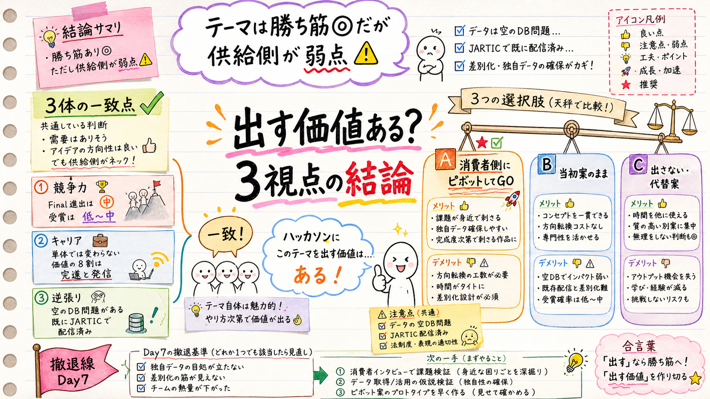

「ハッカソンに出す価値／キャリア接続」を、①競争力 ②キャリア ③逆張り の3体に独立評価させた統合結果。3体とも「テーマは良いが、当初の“供給側1分登録基盤”は最大の弱点」で一致した。

忖度なし。それぞれ別の役割で走らせた。
| 視点 | 結論 | 効いた指摘 |
|---|---|---|
| ① 競争力 | Final進出=中／受賞=低〜中 | 勝ち筋ど真ん中（都知事杯2025最優秀「YORUMICHI」と同系）。だが二番煎じ＋登録データ実在性が穴 |
| ② キャリア | 単体では変わらない | 価値の8割は完遂＋発信。GovTech複業40%/AI受託35%/自社10%/転職20%。本当の価値=2件目を始める自分 |
| ③ 逆張り | 当初案は折れやすい | JARTIC/国交省が既にリアルタイム規制を配信済み。空のDB問題。型（着想得意・完遂課題）と逆行 |
3体の一致点：①方向性は良い ②「供給側=担当者1分登録」は捨てる/格下げ ③ピボット先は全員一致で「既存オープンデータの消費者側ツール」 ④行政採用は狙うな ⑤あなたの型的に「完遂＋撤退線」が生命線。
「担当者が1分で登録する供給基盤」が抱える構造的な穴。
| 弱点 | 中身 |
|---|---|
| 空のDB問題 | 道路規制の一次情報は事業者・警察・道路管理者が持つ。個人アプリに現場が登録する動機がない＝DBが埋まらない |
| 再配信の新規性が薄い | JARTIC（5分更新API）・国交省・都カタログが既に配信済み。「再配信」は既存インフラと重複 |
| 正確性の担保 | 利用者別リスク値の正しさを個人が保証できない。事故・迂回誘導に絡むと信頼/責任リスク |
| 型との逆行 | データ供給・継続運用が必須＝着想得意・完遂課題のあなたが最も折れやすい構造 |
3体の推奨は A。ただし決めるのはあなた。
どれを選んでも共通の生命線：Day7に撤退線を引く（実データ接続できなければ縮小 or 撤退）＋ 開発と並行でX/note週次ログ・GitHub整備・技術記事1本（価値の8割はここ）。